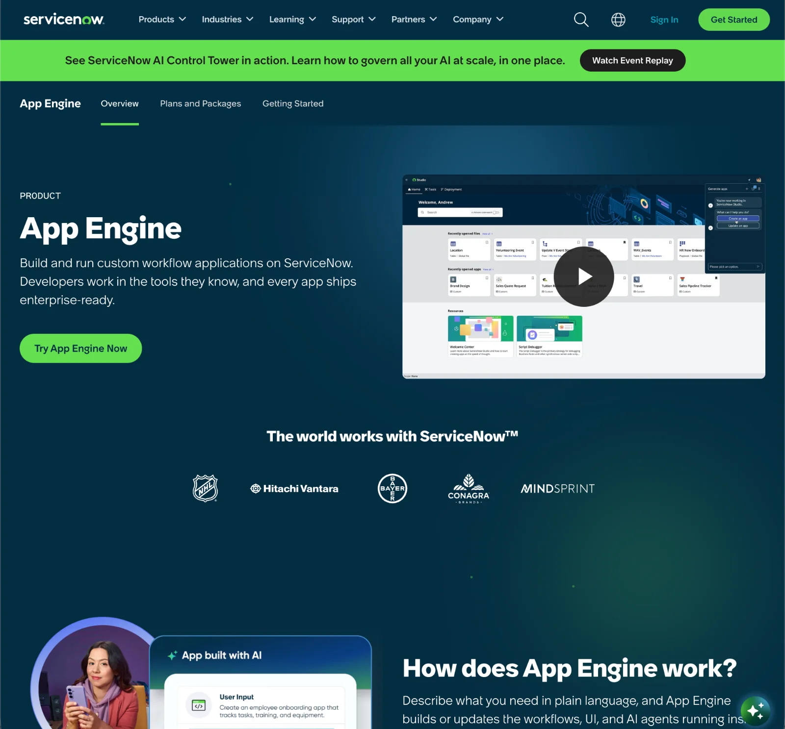
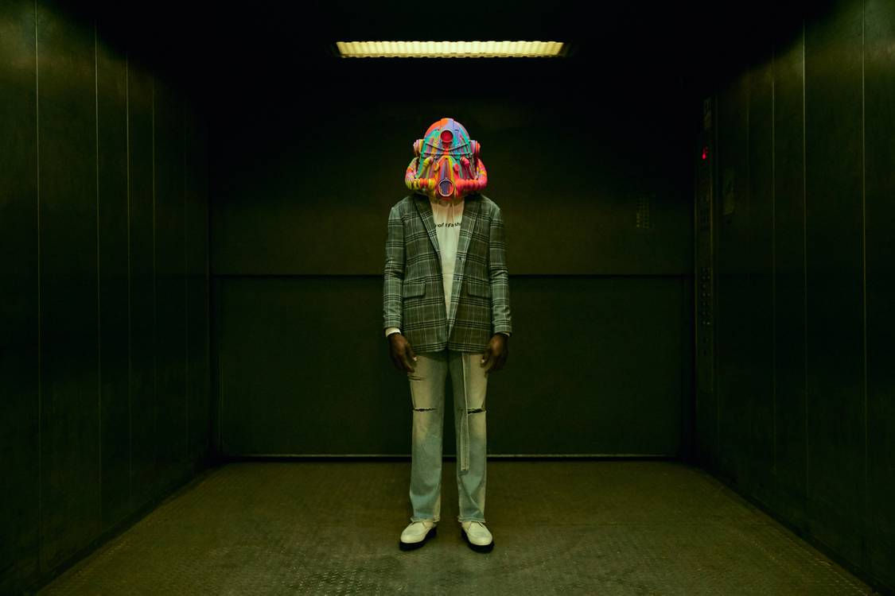

Derrin Andrade
Program Manager
Different rooms, same job.
Campaign lookbook, Helmets for Habitat, 2018.
About me
I've spent fifteen years being the person who makes complicated things land.
Teams that don't report to me and a date that doesn't move. That's my natural habitat, and I've done it in every shape an organization comes in: agency floors where the client sets the clock, in-house teams where you own the outcome, and platform scale where the machine has its own machines. Digitas, Arnold, AKQA, Meta, AmeriSave, ServiceNow. Different rooms, same job.
I stumbled into it. I didn't know program management existed when I got the offer right out of undergrad. Fifteen years and six very different rooms later, I'd call that less an accident than a diagnosis.
I'm behind the scenes by choice. My job is to clear the path so the team does the best work of their careers, and to let the work be the thing people notice.
What drives me: collaboration, impact, and shipping work that holds up.
Different rooms, same job. So what's the job?
I build things that outlive me.
- The translator: engineering needs precision, creative needs latitude, stakeholders need to go first
- The one who counts what nobody's counted
- The one who says no — and makes yes cost something
- The one they call when it's already burning
- The one they kept
At AmeriSave I was building intake and delivery for a 35-person in-house agency, standing up the machine that would take work back from the outside agencies I'd spent my career working for. When the first round of cuts took my counterpart, they made me the lead. Six months later the market took the whole department.
The process was working when the lights went out.
I don't get to claim a win I can't prove. But I know why they picked me: an operating model Meta reused across its advocacy programs, a script that became ServiceNow's model for every migration after it, a framework five agencies adopted at Arnold and took to other accounts.
Work

ServiceNow, 2023–26
Releases & Product Launches
Every release opened with a bill of materials of 25–40 pages, because we said yes to everything. Nothing in the GTM plan pointed at two-thirds of them.
67% scope reduction · engagement nearly doubled · concurrent programs kept moving

ServiceNow, 2023–24
Design System Migration
Nobody migrates 4,000+ pages by migrating 4,000+ pages. My job was to make them automatable, then sequence them against a release calendar I was also running.
4,000+ pages · 20,000+ hours eliminated · the script became the template for every migration after it
Meta, 2021
Good Ideas Shop
I inherited this one mid-concept, from a PM it had already broken. It had every resource it needed, and no alignment on what it was building.
93MM+ impressions · 34 small businesses activated · influencer impressions 2.6× goal

Helmets for Habitat, 2018
A campaign that paid for houses
Forty artists, one lookbook, a charity auction, and a budget that had to hold.
$200K+ raised · 40+ artists · delivered within 1% of budget
Agency operations
One intake, five agencies
Five processes mapped by asking, not auditing, then expanded instead of compressed.
Adopted by all 5 agencies · extended to other accounts · repeat errors eliminated
What's next
Different rooms, same job. Here's the next room.
Every program on this site had elements nobody on the team had done before. AI isn't a departure from that. It's that condition, permanently.
- I've already done it once: drove adoption of the ServiceNow AI Platform across studio, publishing, and engineering
- What I want next: the discovery work. Which tools actually make people's lives better, and how do we know?
- Adoption breaks at the seams. Counting those is what I do.
- The one who says no is a safety hat. Not everything that can ship, should.
Credentials
MBA, Business Analytics, UMass Amherst
AI Strategist & Builder, Harvard Data Science Review, 2026
SAFe 6 Agilist
Bronze Clio, Fallout 76 Integrated Campaign, 2019
Different rooms, same job.